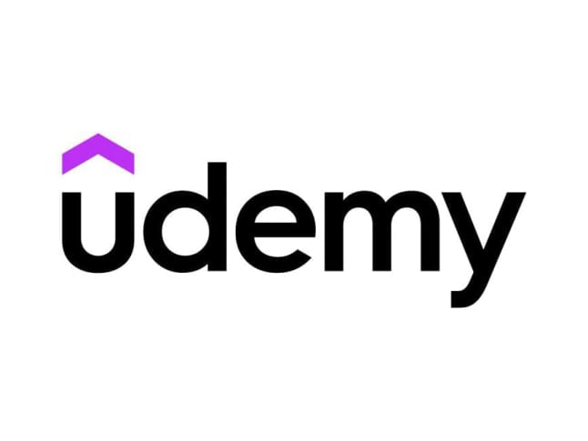

Best AI Website Creator
Fortunately, South Africa boasts an abundance of online learning platforms that offer a diverse range of courses—many of which are free and designed to fit into your busy schedule. From digital marketing and coding to project management and personal development, the options are plentiful and cover key areas that are essential for success in today’s workforce.
For instance, you might explore courses in digital marketing to master social media strategy and SEO techniques, or delve into coding languages like Python and Java to boost your tech skills. If project management piques your interest, you could find courses that offer certification in popular methodologies like Agile or Scrum, preparing you for leadership roles in various industries. Additionally, personal development courses can help you improve soft skills such as communication, teamwork, and time management—qualities that are highly valued by employers.
Below, you will find a carefully curated list of some of the best online courses currently available to South Africans. These programs are tailored to help you advance your career, keep your skills sharp, and position yourself as a standout candidate in the hiring process.
💻 1. Google Digital Skills for Africa
Google’s Digital Skills for Africa platform offers an extensive library of free online courses focused on today’s most in-demand skills. Whether you're looking to get into digital marketing, understand analytics, or explore business development tools, these certified courses are ideal for job seekers.
Highlights: Fundamentals of digital marketing (certified), entrepreneurship, coding basics, data analytics
Cost: Free
Website: g.co/digitalskills
🌐 2. Coursera (Free Courses)
Coursera partners with top universities and companies worldwide to deliver university-quality content. South African learners can enroll in audit-mode for free, meaning you can access full course materials without paying (though certificates cost extra).
Topics: Business, IT, personal development, leadership, project management, and more
Cost: Free access; optional paid certificate
Website: coursera.org
🎓 3. edX
edX offers courses from globally respected institutions like Harvard, MIT, and UCT. You can enroll for free and upgrade later if you want a certificate.
Topics: Programming, leadership, design thinking, data science, finance
Best for: People exploring international-grade education for free
Website: edx.org
📚 4. Alison
Alison offers thousands of free online courses across a wide range of subjects. You can earn a certificate or diploma (paid) to showcase on your CV or LinkedIn profile.
Popular fields: Project management, Microsoft Excel, workplace safety, healthcare basics
Website: alison.com
🌍 5. FutureLearn
FutureLearn works with world-renowned universities and institutions to offer engaging short courses for learners across the globe. Topics are wide-ranging and delivered in a flexible format.
Subjects: Marketing, health, IT, law, education, personal branding
Free Plan: Limited-time access to courses; upgrade for certificates
Website: futurelearn.com
📟 6. Skills Academy (South Africa)
For locally focused learners, Skills Academy provides free introductory courses on topics like entrepreneurship, office admin, and project management. While most introductory courses are free, certificates and more advanced learning paths may require payment. It’s perfect for those seeking practical business skills without needing to commit to full diplomas right away.
Format: Study at your own pace; no exams or pressure
Value: Helps you build workplace-ready skills in a South African context
Website: skillsacademy.co.za
For locally focused learners, Skills Academy provides free introductory courses on topics like entrepreneurship, office admin, and project management. It’s perfect for those seeking practical business skills without needing to commit to full diplomas right away.
Format: Study at your own pace; no exams or pressure
🧠 7. LinkedIn Learning (One-Month Free Trial)
If you're already job hunting, having a professional LinkedIn profile is a must — and so is LinkedIn Learning. Their one-month free trial gives you access to thousands of high-quality courses tailored for professional development.
Topics: CV writing, interview prep, Excel, leadership, remote working
Tip: Cancel before the end of the trial to avoid charges
Website: linkedin.com/learning
📏 8. Khan Academy
Khan Academy provides completely free, world-class educational content in maths, economics, and computing — ideal for learners of all ages.
Perks: No registration required, interactive learning format
Bonus: Great for brushing up on numeracy or finance skills before assessments or interviews
Website: khanacademy.org
🧑🏫 9. Udemy (Free Courses Section)
Udemy is a popular platform offering a mix of paid and free courses. While many of their best courses come at a cost, there’s a dedicated free course section with hundreds of valuable lessons.
Topics: Photoshop, productivity, marketing, basic coding, career coaching
Tip: Look for instructors with high ratings and clear lesson previews
Website: udemy.com
How to Make the Most of Your Learning
• Add Certifications to Your CV
• Upon finishing a course, seize the opportunity to download your certificate (if it's offered) and showcase it prominently in the "Certifications" or "Skills Development" section of your CV. This act not only highlights your proactive nature but also reflects your unwavering commitment to personal growth and your eagerness to expand your knowledge. It's a powerful way to demonstrate to potential employers that you are dedicated to continuous improvement and professional excellence.
Boost Your LinkedIn Profile
Make sure to regularly update your LinkedIn profile with the details of each course you complete. In today’s competitive job market, many employers conduct thorough scans of LinkedIn profiles before making decisions about interviews. Highlighting your completed courses not only showcases your commitment to personal development but also demonstrates your dedication to advancing your professional skills. By listing these accomplishments, you signal to potential employers that you are serious about your career growth and are actively seeking to enhance your expertise in your field.
Talk About It in Interviews
During interviews, don’t hesitate to showcase your courses with enthusiasm: “I’ve just finished the Google Digital Marketing certification, a transformative experience that deepened my understanding of SEO, SEM, and analytics. This program provided me with valuable insights into the intricate strategies that drive online business growth, fueling my passion for digital marketing and my desire to make a meaningful impact in the field.” This not only highlights your initiative but also underscores your relevance and eagerness to advance your skills.
Key Takeaways
Embarking on a quest for a new job while simultaneously enhancing your skills is a strategic move that can bolster both your confidence and your competence in the workplace. The digital world is teeming with platforms that provide completely free access to a treasure trove of high-quality courses, allowing you to delve into subjects that pique your interest or expand your professional expertise.
Earning certifications not only adds a distinguished feather to your cap but also sets you apart in the bustling and competitive job market, showcasing your commitment to growth and excellence. Engaging in continuous learning keeps your mind sharp and invigorated, nurturing your self-assurance and, importantly, helping to cultivate a mindset geared toward success.
Embrace this transformative period as a thrilling journey where you can cultivate new skills and uncover exciting opportunities that will illuminate your path to future success. Dive into online courses, discover thought-provoking articles, and connect with inspiring communities eager to share their insights. Your dream career awaits—take that first step and begin your exploration today!
As you eagerly anticipate that life-changing call from your dream job, seize this moment to ensure it doesn’t slip away unnoticed. Envision this time as a golden opportunity to unlock your true potential, delve into a treasure trove of knowledge, and enhance your marketability. You don’t need to pour vast sums of money into expensive courses or hold an elite degree to embark on this transformative journey; all you require is a dependable internet connection and an insatiable curiosity to learn.
Let this be a vibrant chapter of your life where you cultivate invaluable skills and uncover thrilling opportunities that will illuminate the path toward your future success. Embrace this period of growth, and watch as it becomes the foundation of your aspirations, setting you on a trajectory toward your dreams.
Start today. Your future self will thank you.
Other Article: Navigating the Global Job Market: A Guide for Job Seekers in South Africa
Best AI Website Creator